Start启动类
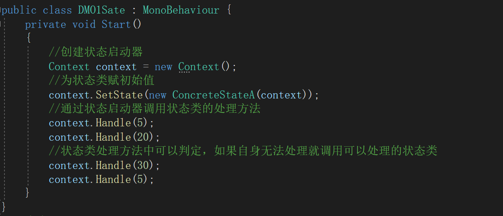状态控制器
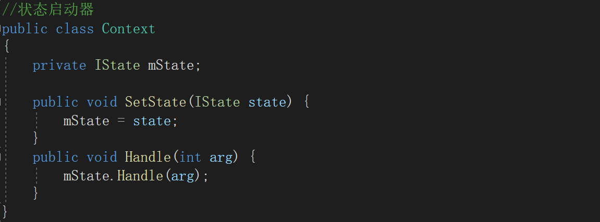状态接口
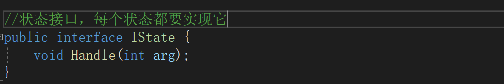状态类A
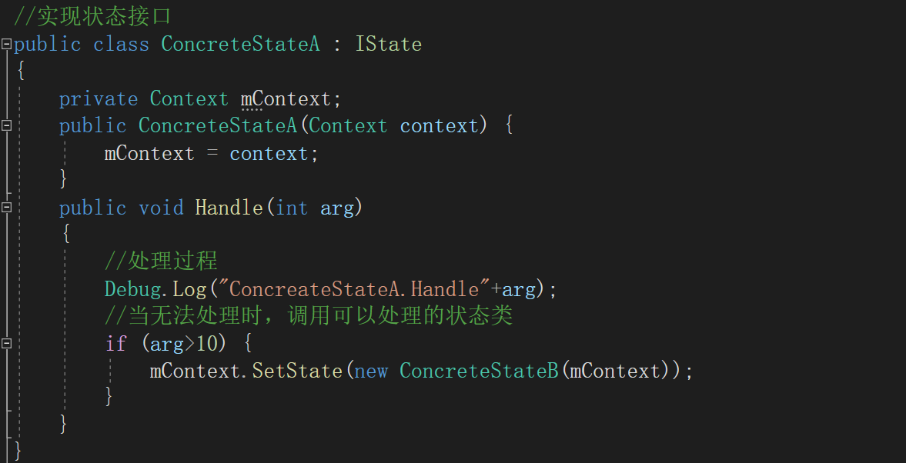状态模式B
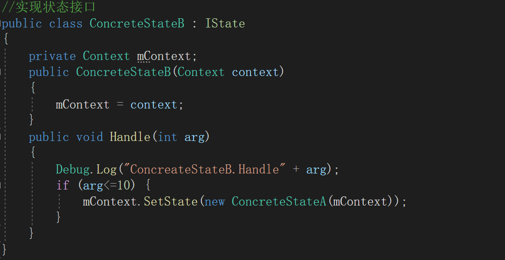案例：场景管理器
场景分别是：01StartScene，02MainMenuScene，03BattleScene三个场景，只有第一个场景有GameLoop类，通过异步加载
ISceneState接口类
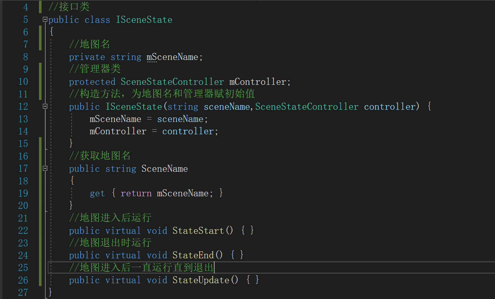这里的接口类虽然叫接口类，但实际上不是接口，之后几个地图的状态类都要继承它
SceneStateController控制器类
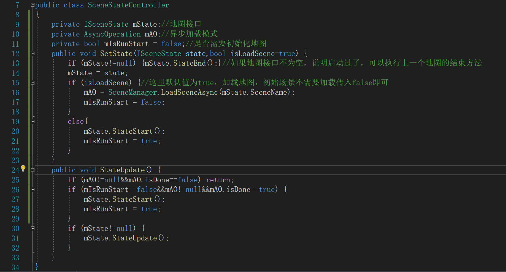GameLoop类
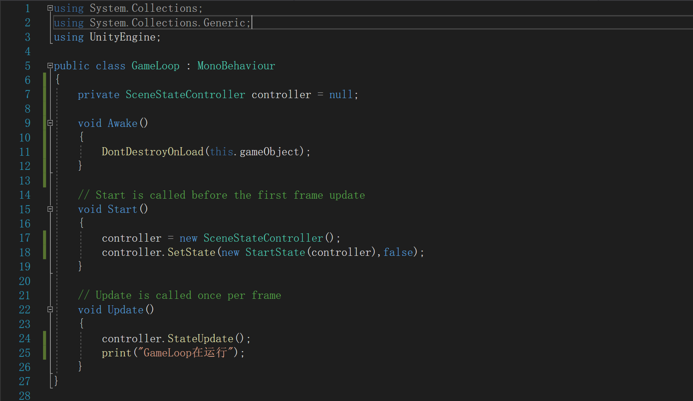当GameLoop类为控制器类赋初始值后就会一直运行Update，由于是异步加载所以GameLoop即使切换场景后也能运行
StartState初始场景状态类
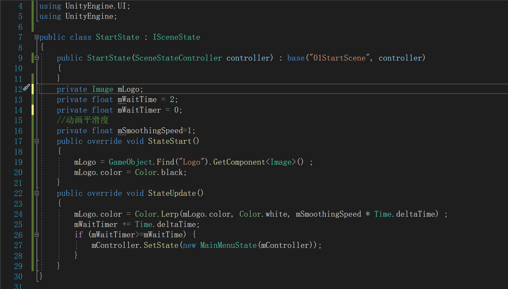主菜单类MainMenuState
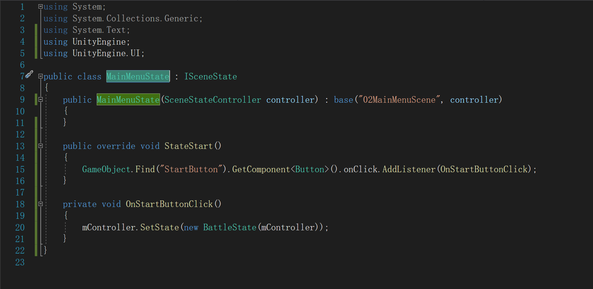战斗场景类BattleState
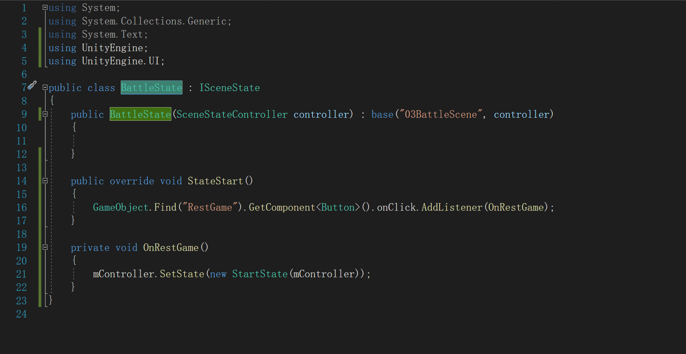外观（Facade）模式又叫作门面模式，是一种通过为多个复杂的子系统提供一个一致的接口，而使这些子系统更加容易被访问的模式。该模式对外有一个统一接口，外部应用程序不用关心内部子系统的具体细节，这样会大大降低应用程序的复杂度，提高了程序的可维护性。
游戏控制类
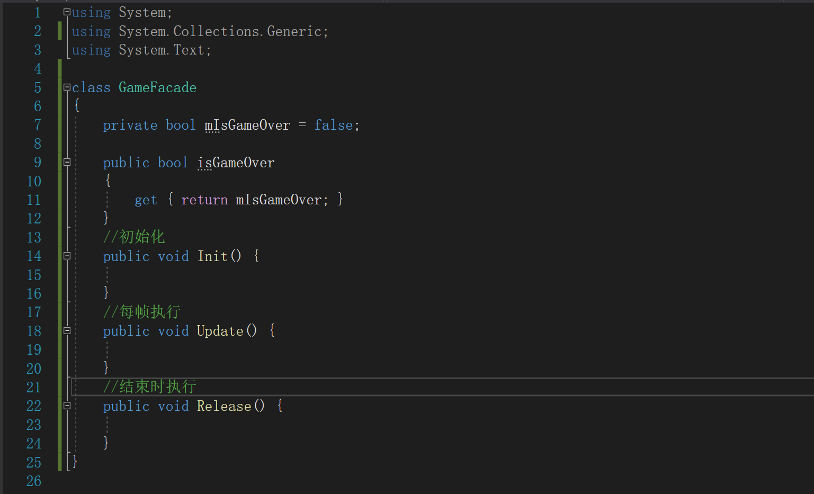场景类
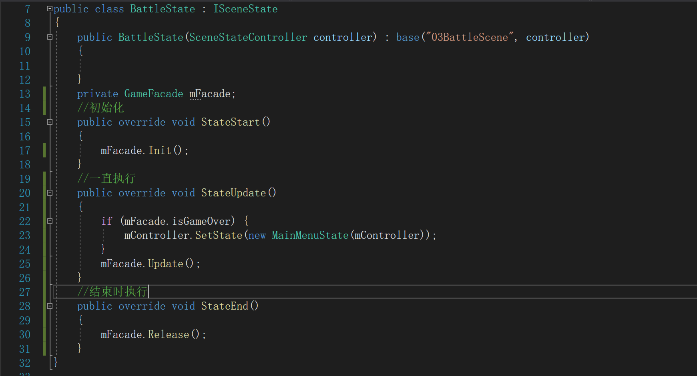外观模式更像是一个中继类，如果将游戏的控制方法也写在游戏场景控制类中，就会显得控制类十分庞大，也违反了单一原则。
而外观模式就是作为一个中继站存在，负责帮助场景类和游戏控制类进行交流。
当一个类经常使用，而且从运行到结束它都只有一个对象的时候就可以使用单例模式。
这种模式下使用该类就不需要在创建对象比较方便，但也一直占着内存，而且想要修改时只能修改代码。
中介者（Mediator）模式的定义：定义一个中介对象来封装一系列对象之间的交互，使原有对象之间的耦合松散，且可以独立地改变它们之间的交互。中介者模式又叫调停模式，它是迪米特法则的典型应用。
例如在游戏开发中，各个模块之间都需要相互通信，但如果让各个模块都有自己的通信方式，那么各个模块就会变得庞大臃肿
而中介者模式可以很好的解决这个问题，将各个模块的相互通信通过一个中介类进行传达，从而减轻各个类的体积。
将抽象部分与它的实现部分分离，使它们都可以独立地变化。【GOF95】在提出桥梁模式的时候指出，桥梁模式的用意是"将抽象化(Abstraction)与实现化(Implementation)脱耦，使得二者可以独立地变化"。这句话有三个关键词，也就是抽象化、实现化和脱耦。
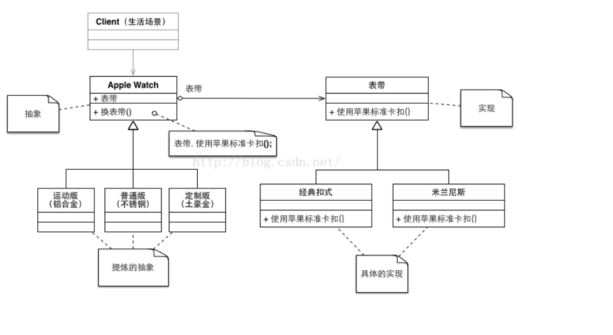定义一系列的算法，把它们一个个封装起来，并且使它们可相互替换。本模式使得算法可独立于使用它的客户而变化。
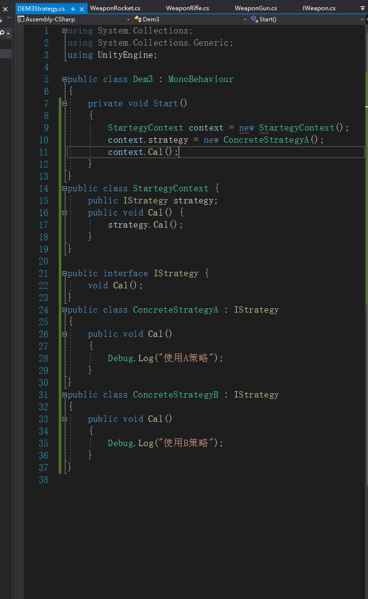举个例子，这里用输出语句代替算法和处理的操作。
创建了一个接口，接口中有一个处理函数Cal();
这里的ConcreteStrategyA和ConcreteStrategyB代表两个不同的策略模式，并重写Cal()处理函数。
StrategyContext代表一个指挥者，指挥者存储这两个策略的父类，并提供一个执行策略的方法Cal()
当用户需要使用A策略处理事件的时候，就将策略A的对象传递给指挥者，由指挥者调用处理函数。